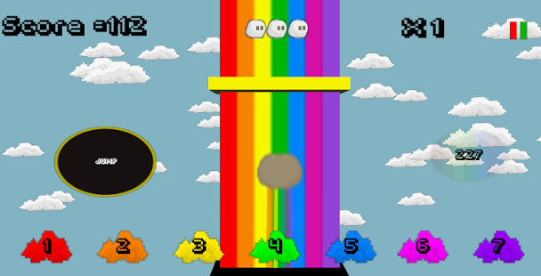

SLIMEBOW
What is Slimebow? Well, Slimebow is the ONLY game (we know of) where you help a sleepy Slime
traverse an endless sprint along a rainbow by making sure he blends in with the
oncoming ColourWalls.
The first title from the Belfast-based studio Pandara's Box, a
student-founded games developer, Slimebow tasks players with anticipating the
correct rainbow shade needed to survive approaching obstacles in order to keep
going and beat their high scores in arcade action reminiscent of both rhythm and
runner games.
Consecutive successful colour swaps builds your multiplier but
the higher it builds the more you lose if you make a mistake. 3 mistakes and it’s
the end of the line. Jump obstacles to avoid conceding score and lives to a wrong
swap or to miss the insta-death of the colourless-impassables: the BlackWalls!
Maintain the max multiplier for a rapid increase in score or trade it in for a brief respite,
a few sweet seconds of invulnerability to all, including the Black.
How long will you last? Will you be the best protector of our friendly dimension-hopping
Slime McGloopin (or will one of your friends out-colour you)? Try not to hurt the hapless
critter too much players.... he'll be in no shape for further adventures otherwise ^_^
The game can be found for iOS & Android here:
Slimebow for Android
Slimebow (Free - Ad banners) for Android
Slimebow for iOS
Slimebow (Free - Ad banners) for iOS
Slimebow for Desktop
